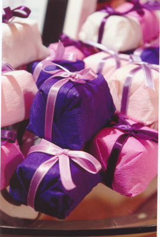
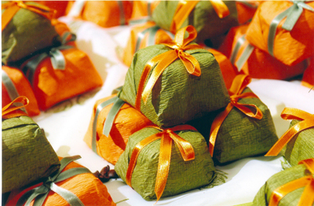

| Lembrancinhas |
| Escrito por administrador | |
| segunda-feira, 09 de agosto de 2004 | |
|
As lembrançinhas de casamento são uma das maneiras de agradecer a presença dos convidados...
Cada vez mais os casamentos são elaborados e glamorosos. A apresentação e a embalagem das lembranças de casamento devem ter um ênfase única e apelativa. Às vezes a maneira como uma lembrancinha de casamento é apresentada dá ao casamento um ar memorável. Não se esqueçam que as lembrançinhas de casamento são uma das maneiras de agradecer a presença dos convidados. Os brindes ou lembranças de casamento podem ser decorativos, complementando a decoração das mesas da recepção, ou o próprio ambiente da festa. Tal como o resto da decoração do casamento, os brindes devem refletir a formalidade do casamento, e a personalidade do casal. Usem uma embalagem de bom gosto, não ofereçam as lembranças avulsas. Uma pequena caixa, ou saquinho de papel com um laço, oferece um embrulho de bom gosto para qualquer brinde. Se os convidados notarem que existiu um esforço da vossa parte para agradar, isso será um gesto mais importante que o brinde dentro do embrulho. É de grande importância que as cores das embalagens das lembranças estejam de acordo com a palete de cores do casamento, com as mesas, com as flores, etc. Podem colocar fitas com cores a condizer nas lembranças. Coloquem uma mensagem personalizada em cada lembrança, nem que seja sobre a funcionalidade da própria lembrança, pode ser uma frase que faz sentido para vocês, um pequeno poema, etc... No caso de oferecerem doces podem sempre escrever algo como: "2 doces para cada um, para que não esqueçam que a vida também é doce..." Mandar gravar as iniciais, usar uma fita personalizada, ou usar a data de casamento impressa, ou até uma mensagem pessoal, também farão as lembranças mais personalizadas. Tudo isto pode ser escrito à mão para dar um toque pessoal, mas só no caso de a caligrafia ser realmente bonita, senão mais vale optarem por contratar um calígrafo profissional para o fazer. Outra opção poderá ser a impressão a laser, muito menos dispendiosa e também com resultados muito interessantes. Aliem alguma funcionalidade aos brindes de casamento, usem-nos como cartões indicativos para os convidados, por exemplo: na mesa à entrada da recepção, coloquem um pequeno cartão em cada brinde com o nome do convidado e número correspondente da mesa da recepção. Podem também fazer vocês mesmos um pequeno cartão para prender nas lembrancinhas; colocando um monograma com as iniciais, a data do casamento, etc., enfim a criatividade aqui é um fator a dar asas. A Lenda do Bem Casado: O Bem Casado representa duas partes que se unem e são seladas pela cumplicidade e respeito mútuo. Para que se tenha muita sorte, na união, deverá ser distribuído um Bem Casado a cada convidado. Diz a lenda, que todo aquele que saborear um Bem Casado, estará sendo abençoado com a mesma sorte e felicidade de quem oferece. Basta fazer um pedido, antes de dar a primeira mordida... |
|
| Última Atualização ( quarta-feira, 27 de junho de 2007 ) |